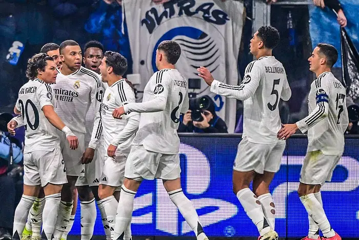
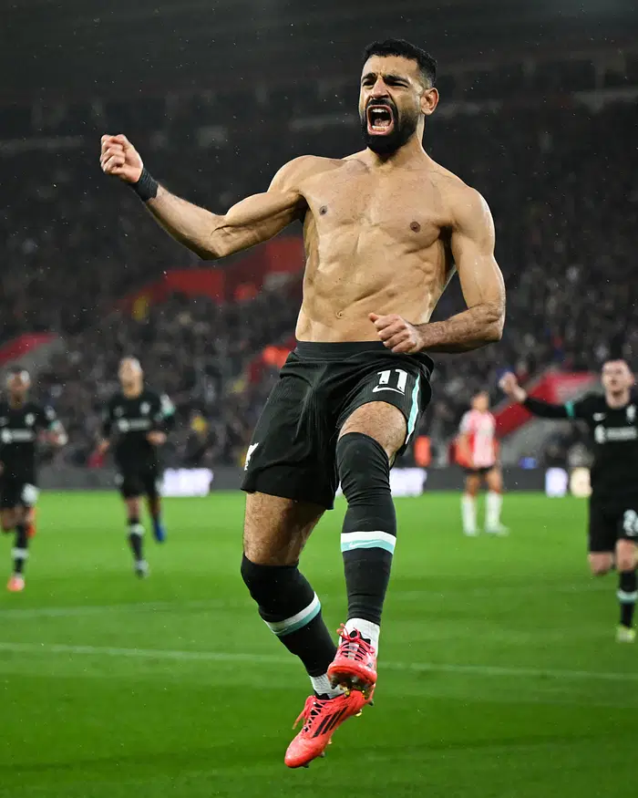
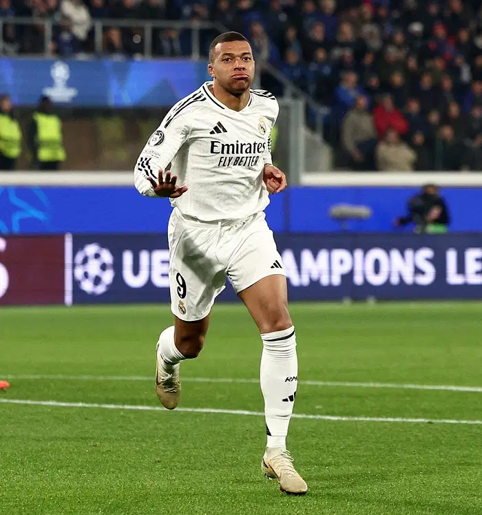

‘বিএমভি ত্রিফলায়’ জয়ে ফিরল রিয়াল, বায়ার্নের গোল–উৎসব, লিভারপুলের ছয়ে ছয়
খেলা ডেস্ক
প্রকাশ: ১১ ডিসেম্বর ২০২৪, ০৪: ২৭
রিয়াল মাদ্রিদের গোল উদ্যাপনছবি: এক্স
দেয়ালে পিঠ ঠেকে গেলে কীভাবে ঘুরে দাঁড়াতে হয়, তা রিয়াল মাদ্রিদের চেয়ে ভালো জানা কোন ক্লাবের? উয়েফা চ্যাম্পিয়নস লিগে টানা দুই হারের পর এবারও ঘুরে দাঁড়াল রিয়াল। ইতালিয়ান ক্লাব আতালান্তার বিপক্ষে জিতল ৩–২ গোলে।
রিয়াল কোচ কার্লো আনচেলত্তি যতটা চেয়েছিলেন, রিয়াল ততটা ভালো হয়তো খেলেনি। কিন্তু ‘বিএমভি ত্রিফলা’ একসঙ্গে জ্বলে উঠলে আর কী লাগে! দলের গোল তিনটি যে করেছেন আক্রমণভাগের ত্রয়ী বেলিংহাম, এমবাপ্পে ও ভিনিসিয়ুস।
অন্য ম্যাচে গোল–উৎসব করেছে বায়ার্ন মিউনিখ ও পিএসজি। ইউক্রেনের ক্লাব শাখতার দোনেৎস্কের বিপক্ষে শুরুতে পিছিয়ে পড়েও ৫–১ গোলে জিতেছে বায়ার্ন। অস্ট্রিয়ান ক্লাব সাল্জবুর্গের বিপক্ষে পিএসজির জয় ৩–০ গোলে।
রাতের আরেক ম্যাচে পেনাল্টি থেকে মোহাম্মদ সালাহর গোলে জিরোনাকে ১–০ ব্যবধানে হারিয়েছে লিভারপুল। চ্যাম্পিয়নস লিগের এবারের মৌসুমে এ নিয়ে ছয় ম্যাচের ছয়টিতেই জিতল আর্নে স্লটের দল। ৩৬ দলের আসরে সবকটি ম্যাচ জেতা একমাত্র ক্লাব লিভারপুলই। সবার আগে নকআউট পর্বও নিশ্চিত করে ফেলল অলরেডরা।
সালাহর গোলে জিরোনাকে হারিয়েছে লিভারপুল ছবি: উয়েফা
নামে–ভারে–অর্জনে রিয়াল অনেক এগিয়ে থাকলেও সাম্প্রতিক ফর্ম বিবেচনায় আতালান্তাই ছিল ফেবারিট। ইতালির ছোট্ট শহর বের্গামোর ক্লাবটি একে তো সিরি ‘আ’–এর পয়েন্ট তালিকার শীর্ষে, তার ওপর খেলাটা নিজেদের মাঠে।
তবে প্রায় ২৫ হাজার দর্শক ধারণক্ষমতার গিউইস স্টেডিয়ামকে স্তব্ধ করে দিতে খুব বেশি সময় লাগেনি রিয়ালের। ১০ মিনিটেই ব্রাহিম দিয়াজের পাস থেকে মাদ্রিদের ক্লাবটিকে এগিয়ে দেন কিলিয়ান এমবাপ্পে। চ্যাম্পিয়নস লিগে এটি তাঁর ৫০তম গোল। ইউরোপীয় ক্লাব ফুটবলের শীর্ষ এই প্রতিযোগিতায় এমবাপ্পে প্রথম ৬ গোল করেছিলেন এএস মোনাকোর হয়ে, রিয়ালের হয়ে আজকের গোলটি ছিল দ্বিতীয়, বাকি ৪২ গোল পিএসজির জার্সিতে।
চ্যাম্পিয়নস লিগে নিজের ৫০তম গোলের পর কিলিয়ান এমবাপ্পের উদ্যাপনছবি: এক্স
সব মিলিয়ে চ্যাম্পিয়নস লিগ ইতিহাসের নবম ফুটবলার হিসেবে ৫০ গোলের মাইলফলক স্পর্শ করলেন এমবাপ্পে, বয়সের হিসেবে ২৫ বছর ৩৫৬ দিনে। তাঁর চেয়ে কম বয়সে ৫০ গোল করেছেন শুধু লিওনেল মেসি (২৪ বছর ২৮৪ দিন বয়সে)।
তবে মাইলফলক ছোঁয়া গোলের পরও রাতটা ভালো কাটেনি এমবাপ্পে। ঊরুর চোট নিয়ে ম্যাচের ৩৬ মিনিটে মাঠ ছাড়েন তিনি। তাঁর বদলি নামেন রদ্রিগো।
প্রথমার্ধের যোগ করা সময়েই ম্যাচে ফেরে আতালান্তা। অরেলিয়েঁ চুয়ামেনি নিজেদের বক্সে মারিও পাসালিচকে ট্যাকল করলে সঙ্গে সঙ্গে পেনাল্টির বাঁশি বাজান রেফারি সাইমান মার্চিনিয়াক। রিয়াল খেলোয়াড়েরা এর প্রতিবাদ জানালেও রেফারি তাঁর সিদ্ধান্তে অবিচল থাকেন। স্পষ্ট কিক থেকে স্বদেশি থিবো কোর্তোয়াকে সহজেই ফাঁকি দেন বেলজিয়ামের তরুণ ফরোয়ার্ড চার্লস ডি কেটেলায়ের। ১–১ সমতা নিয়েই বিরতিতে যায় দুই দল।
আরও পড়ুন
এমবাপ্পে চান, পিএসজি তাঁর আগে চ্যাম্পিয়নস লিগ না জিতুক
০৯ ডিসেম্বর ২০২৪
এক নজরে ফল
আতালান্তা ২–৩ রিয়াল মাদ্রিদ
জিরোনা ০–১ লিভারপুল
শাখতার দোনেৎস্ক ১–৫ বায়ার্ন মিউনিখ
সাল্জবুর্গ ০–৩ পিএসজি
লেভারকুসেন ১–০ ইন্টার মিলান
ক্লাব ব্রুগা ২–১ স্পোর্তিং লিসবন
লাইপজিগ ২–৩ অ্যাস্টন ভিলা
ব্রেস্ত ১–০ পিএসভি আইন্দহফেন
দিনামো জাগরেব ০–০ সেল্টিক